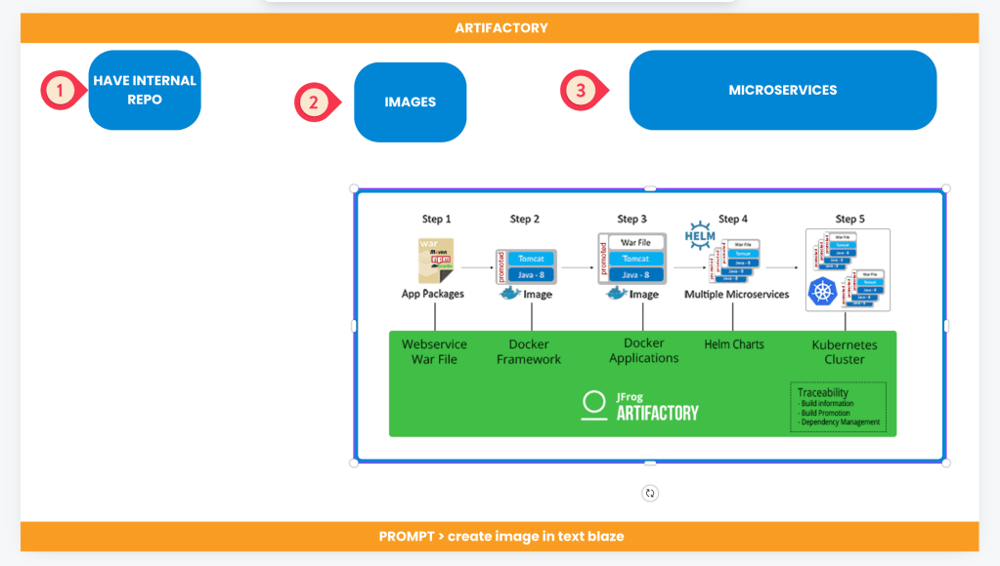

🚀 The Path to Self-Learning: From Reality to Fantasy and Back
Sample Slide / Arrows / Order

-
📝 Write Down Your Reality(Need/Job)
-
🌈 Move from Reality to Imagined Reality( Slides)
-
🎯 Define Your Learning Goals(Images) => Move to Fantasy
-
🤖 Formulate Your Learning Path with GPT(Notes)
-
🧩 Break Down Symbols and Link Actions(Arrows)
-
🛠️ Turn Learning into Reality(Environment)
-
🎭 Enjoy the Pains and Gains(Progress) => Move Back to Reality
Learning new skills can seem overwhelming, but self-learning is a powerful way to achieve your goals at your own pace. Here's how to transform your learning journey from reality into imagination and back to reality, step by step.
1. 📝 Write Down Your Reality (Need/Job)
Start by identifying your current situation—your reality. Are you learning for a job, a personal project, or just out of curiosity? Write it down. This will help you understand where you are now and what you need to improve.
Example: "I need to learn Kubernetes for my current contract work."
2. 🌈 Move from Reality to Imagined Reality (Slides)
Now, imagine the future where you've mastered the skill. Visualize this new reality and create simple slides to reflect the journey from where you are to where you want to be. Use these slides as a reference and motivation.
Example: Picture yourself leading Kubernetes projects, delivering talks, or even teaching others.
3. 🎯 Define Your Learning Goals (Images)
It's time to turn your fantasy into actionable goals. Break down your imagination into smaller, achievable tasks. Creating a list of clear, measurable goals helps transition from fantasy to reality. Use images, visuals, or icons to associate with each goal.
Example: "Set up a Kubernetes cluster" or "Learn how to write Helm charts."
4. 🤖 Formulate Your Learning Path with GPT (Notes)
Use AI tools like GPT to generate insights, resources, and suggestions. This helps you formulate a structured learning path. Take notes along the way to track your understanding and areas you need to explore further.
Example: Ask GPT to explain the basics of Helm charts or recommend online courses.
5. 🧩 Break Down Symbols and Link Actions (Arrows)
Identify key concepts and break them down into symbols, metaphors, or simple terms. Use arrows or other visual aids to show how different ideas connect. This step helps you see the big picture and understand the relationships between topics.
Example: Draw an arrow from "set up cluster" to "write Helm charts" to understand the progression.
6. 🛠️ Turn Learning into Reality (Environment)
Set up your learning environment. Whether it's a virtual lab, a test project, or an online simulation, create a space where you can apply what you've learned. This will allow you to move from theory to practice.
Example: Use GitHub Codespaces to practice Kubernetes configurations in a real environment.
7. 🎭 Enjoy the Pains and Gains (Progress)
Learning is a journey full of challenges and rewards. Embrace the discomfort of mistakes, and celebrate the gains when you succeed. Enjoy the process because every bit of progress brings you closer to making your imagined reality your new reality.
Example: If you solve a tricky Kubernetes problem, reward yourself—you're getting closer to mastering it!
🔗 Connect with me:
-
💼 LinkedIn: https://www.linkedin.com/in/rifaterdemsahin/
-
🐦 Twitter: https://x.com/rifaterdemsahin
-
🎥 YouTube: https://www.youtube.com/@RifatErdemSahin
-
💻 GitHub: https://github.com/rifaterdemsahin
Feel free to take breaks during this journey! Here’s a screenshot pause to help you track progress.
Imported from rifaterdemsahin.com · 2025